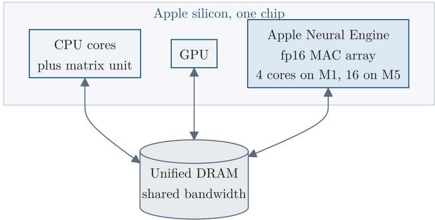
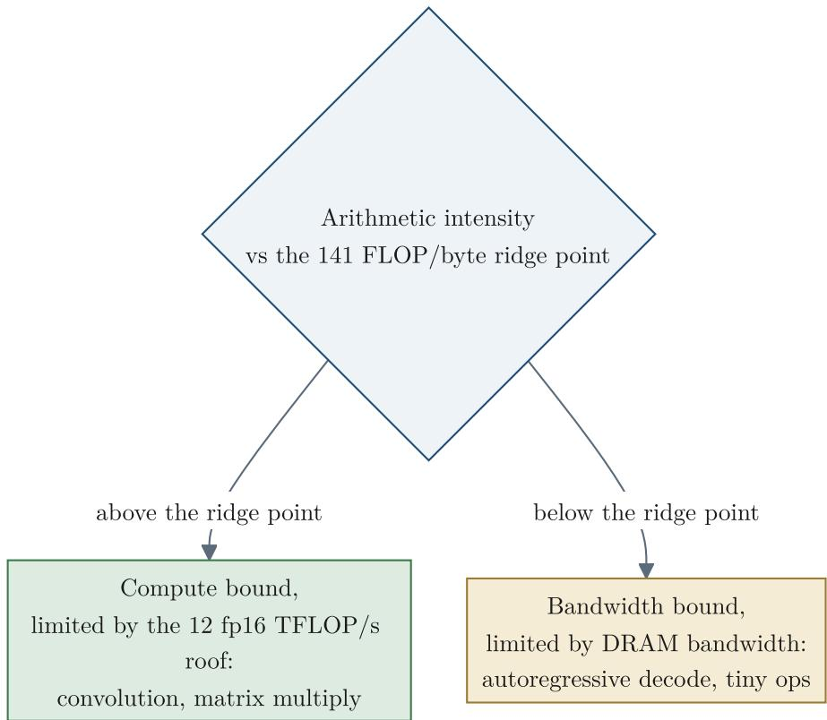
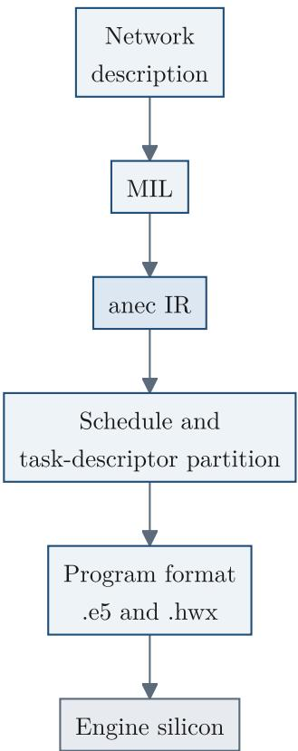
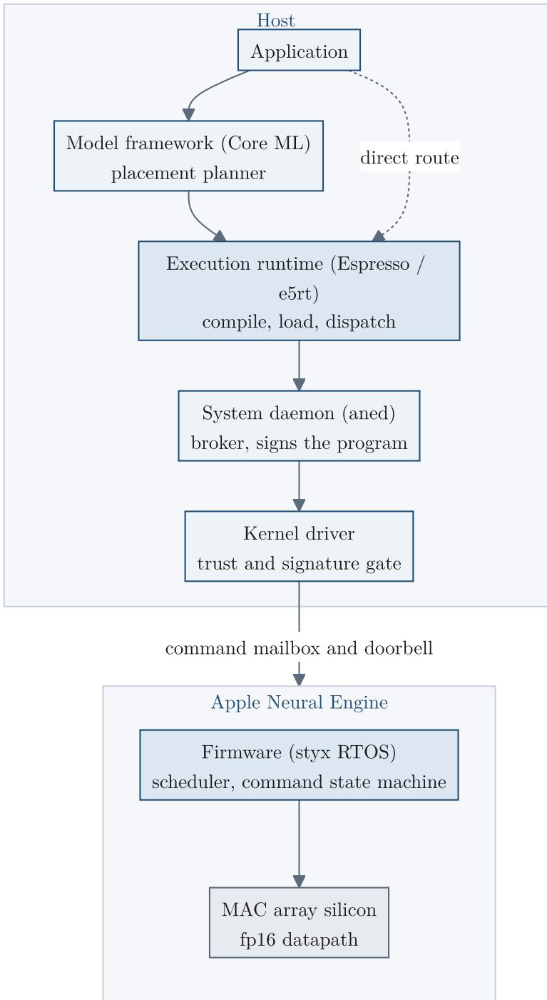
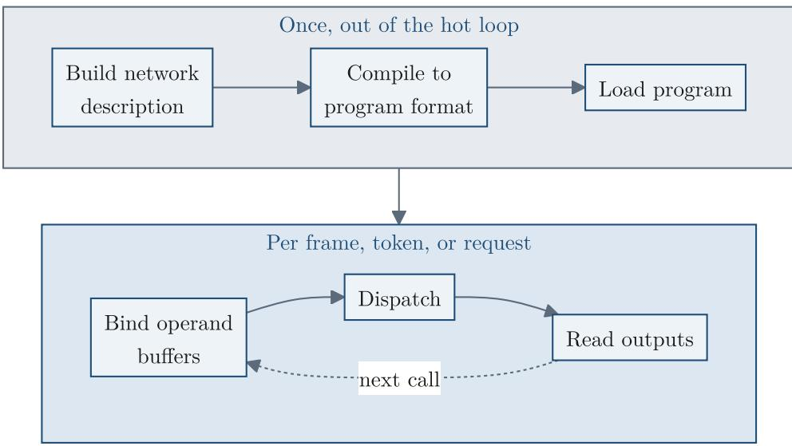
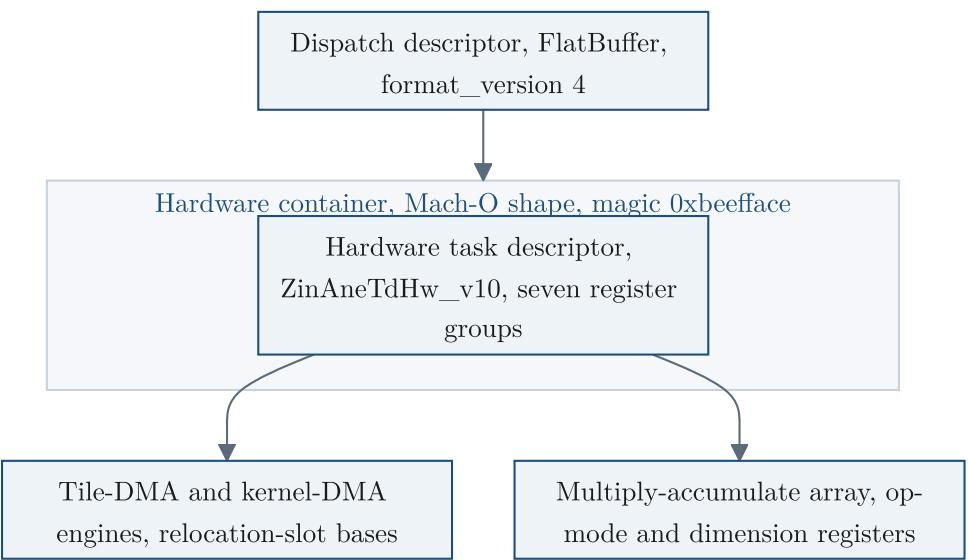

Apple Neural Engine: Architecture, Programming, and Performance 论文解析¶
📄 下载论文原文 (PDF) | 🔗 在线阅读 | arXiv: 2606.22283
0. 论文基本信息¶
作者 (Authors): Spencer H. Bryngelson
发表期刊/会议 (Journal/Conference): ArXiv
发表年份 (Publication Year): 2026
研究机构 (Affiliations): Georgia Institute of Technology
1. 摘要¶
目的
本文旨在全面逆向工程并记录 Apple Neural Engine (ANE) 的完整软硬件栈，包括硅片数据路径、编译工具链、运行时代码、内核驱动、固件协议及性能特征，填补该加速器长期缺乏公开文档的空白。
方法
- 在 M1 (H13) 和 M5 (H17s) 两款实体芯片上执行直接测量，通过绕过 Core ML 框架的私有 Espresso 运行时对引擎进行编程与监控。
- 对未加密的固件映像、内核驱动缓存、编译器二进制及系统守护进程进行静态反编译，提取寄存器映射、命令协议、硬件抽象层参数表及操作合法性规则。
- 使用内核级只读探针捕获膨胀后的程序二进制与地址翻译路径，并通过端到端编译‑运行实验验证每个操作的可达性。
结果
- 架构：ANE 是固定功能的 fp16 矩阵加速器，采用宽累加器（fp32 类），输入经 radix-4 瓦片舍入后送入单一累加器路径。M1 提供约12 fp16 TFLOP/s 计算天花板与 85 GB/s DRAM 带宽，2 MB 片上工作集阈值是关键设计极限；M5 将核心数从4扩展至16，时钟从约1.14 GHz升至约1.89 GHz，带宽提升至约145 GB/s。
- 编程模型：引擎以独立协处理器模式运行，编译一次、分派多次；分派固定开销约0.23 ms（M1）。存在一条无需特殊授权的用户态直接路径，可按编译‑加载‑绑定‑分派五步使用。压缩权重格式（int4 调色板、结构化稀疏）在 M1 上原生流式传输（int4 加速比2.37×），int8 与分块仿射在该代上会折叠为密集 fp16。
- 操作集：确认约108个操作在 M1 上原生运行；3D 卷积、本征状态类型、bf16 I/O 及灵活形状无法通过直接路径访问。纹理引擎采样器在 A14 之后可用，sin/cos 在 A15 之后原生。
- 性能对比：在 256 通道 3×3 卷积上，ANE 比 GPU 快3.8倍、能效高9倍；解码任务因带宽和分派开销限制，GPU 在批处理16时快约2.7倍且能效高4.6倍。训练环路可完全在引擎上运行，跨代精度差异在千分之一以内。
- 底层机制：给出了编译器四阶段流水线、45个原生硬件层描述符、28个编译目标（含与 M 系列芯片的映射关系）、主机‑固件 93 命令协议、IOMMU 页表条目格式及安全隔离模型。
结论
ANE 是一个高效的 fp16 矩阵加速器，在视觉、编码器及中等规模矩阵乘任务中显著超越 GPU；其直接访问路径虽无文档且版本脆弱，但为研究、测量与现场实验提供了完整的功能集合。本文的逆向工程与跨代测量为该加速器提供了首个公开的、从硅片到应用的系统级技术参考。
2. 背景知识与核心贡献¶
研究背景
- Apple Neural Engine（ANE）是苹果从 A11（2017）及 M1（2020）起内置在其所有 SoC 中的固定函数矩阵加速器，全球部署量超过 25 亿台设备。
- 尽管应用广泛，ANE 的文档几乎完全缺失：无公开指令集、无驱动接口、无确认计算是否在其上运行的方法，其数据通路、数值格式、性能/功耗模型、编译器、程序格式、内核驱动、固件及命令协议均未公开。
研究动机
- 填补上述知识空白，提供一份从硅片直至系统接口的完整逆向工程文档。
- 使开发者、研究人员能够理解、预测并有效利用 ANE 的能力，包括其性能边界、编程限制以及跨芯片的兼容性。
核心贡献
- 完整的硬件架构分析：基于直接测量（M1 与 M5）和静态反编译（私有运行时、编译器、内核驱动、固件），逆向推导出 ANE 的 fp16 数据通路、宽累加器（wide accumulator）、乘累加阵列几何结构、片上工作集（2 MB 阈值）及多级缓存/DRAM 层级。
- 性能模型（Roofline）：建立了 ANE 的 roofline 模型，包含计算天花板（~12 fp16 TFLOP/s）、带宽天花板（~85 GB/s）、脊点（141 FLOP/byte）、每调度固定开销（0.23 ms）及能效曲线（0.37 pJ/FLOP 最优）。
- 操作能力矩阵：编制了跨越 A11 至 A18、M1 至 M5 家族的每芯片操作支持表，区分了“声明支持”与“实际可运行”的操作，揭示了诸如 3D 卷积虽有能力位却无法在 ANE 上执行等关键发现。
- 低层级软件栈文档：详细记录了 Core ML 之下的私有直接访问路径（无需特殊授权），包括 Espresso 运行时、程序加载/调度接口、权重量化/压缩格式（int4 调色板、结构化稀疏等）及其流式传输决策机制。
- 编译器、程序格式与固件协议：反编译了 ANE 编译器（28 个目标）、程序容器格式（.hwx, .e5, Mach-O 变体）、内核驱动 IOKit ABI、未加密固件及包含 93 条命令的主机-固件通信协议，并解码了硬件任务描述符寄存器映射。
- 跨家族预测验证：提出了从 M1 到 M5 的芯片家族映射规则（
M(n) → H(n+12)），并通过对 M5 的实际测量验证了基于 M1 分析预测的十项跨代行为（吞吐量、工作集、操作限制等）。 - 训练与科学计算适配：展示了如何利用 ANE 进行完整的端到端训练（前向、反向、优化器状态驻留）及数值计算（如离散傅里叶变换、固定迭代求解器），并量化了跨代训练精度偏差（<0.001）。
3. 核心技术和实现细节¶
0. 技术架构概览¶
整体技术架构
Apple Neural Engine (ANE) 是一个固定功能的 fp16 矩阵加速器，嵌入在 Apple Silicon SoC 中，与 CPU、GPU 共享统一 DRAM 池。其架构从底层硅片到上层软件可分为六个核心层级。
- 硅片层 (Silicon Layer)
- MAC 阵列：由多个 NE Core（M1 上为 4 个物理核，M5 上为 16 个）组成，每个核心含一个 8 深度的累加器文件。
- 数据通路：输入和权重均为 fp16，乘积累加到宽累加器（fp32 级），最终输出圆整为 fp16。支持 int8 双倍吞吐模式。
- 内存层次：
- 片上 SRAM 工作集：M1 为 2 MB，M5 为 4.72 MB。超过此阈值时，操作数会被分块并从 DRAM 流式传输。
- 64 体 SRAM，16 字节交织粒度，银行冲突由编译器静态优化。
- 内核系数存储：64 KB（M1 上的密集权重上限）。
-
内存管理：通过专用 IOMMU (DART) 将主机缓冲区映射到设备虚拟地址空间（16 KB 页，3.5 GiB 窗口）。固件在加载时会将主机 IOVA 重新基址到固件空间（
0x1bc4高半区）。 -
固件层 (Firmware Layer)
- 运行在名为 CHINOOK 的嵌入式 ARM 实时操作系统上（RTKit 框架）。
- 执行循环：接受 4 类命令（过程调用、带 bars 的过程调用、带事件的过程调用、缓存触发），解析后推入任务队列（8 级固定优先级调度器）。
- 命令协议：93 个命令标识符 (
CSNE_CMD_*)，通过共享邮箱（doorbell）与主机通信。 -
电源管理：5 个独立门控域（1 个基域 + 4 个计算集群），空闲时完全断电（0 W 待机）。无本地 DVFS，由 SoC 级电源管理器控制。
-
内核驱动层 (Kernel Driver Layer)
- 三个内核扩展协作：AppleH11ANEInterface（硬件驱动）、AppleT8132ANEHAL（每 die 抽象层）、AppleANELoadBalancer（多引擎仲裁）。
- 用户客户端：控制客户端（17 个选择器）和直接路径客户端（9 个选择器），提交时使用
selector 2（2376 字节输入）调用硬件 doorbell。 -
权限模型：
com.apple.ane.iokit-user-access是打开设备的内核权限，仅 aned 和 aneuserd 持有。所有其他应用通过系统守护进程（aned）代理访问。 -
用户空间软件栈 (User-Space Software Stack)
- 顶层：Core ML 框架，带有基于成本图（Dijkstra）的放置分割器，将工作分段分配给 CPU、GPU、ANE。
- 运行时层：Espresso/e5rt 运行时，是编译和执行的核心。公开 292+ 个入口点，支持直接编译、加载、绑定、执行，无需 Core ML。
-
直接路径：绕过 Core ML，直接从用户空间调用 e5rt API，无需分割器，且无权限要求（对于编译器接受的操作）。这是本文所有测量的基础。
-
编译器及程序格式 (Compiler & Program Format)
- 单一编译器二进制：根据 28 个目标架构（通过
MinimumFamily<N>特性和 HAL 表实现）生成不同代码。 - 编译流水线：融合 → 合法化 → 调度与任务描述符分区 → 内存与 DMA 优化。
-
程序格式：
- 分派描述符（FlatBuffer
E5Program）：描述操作链（通常为 Cast → AneInference → Cast）。 - 硬件容器（Mach-O 变体，魔数
0xbeefface）：包含寄存器写入流、权重系数、任务描述符，后编译签名。 - 固件容器（AFPP）：三段式（ANEH/ANEP/ANES），用于加载。
- 分派描述符（FlatBuffer
-
性能模型 (Performance Model)
- Roofline：计算峰值（M1 约 12 fp16 TFLOPS）vs 带宽峰值（M1 DRAM 约 85 GB/s），脊点约 141 FLOP/byte。能效峰值约 0.37 pJ/FLOP。
- 分派地板（M1 约 0.23 ms），所有单次调用都无法低于此开销。
- 工作集阈值：2 MB（M1）是关键设计限制：超过则从 DRAM 流式传输，强度急剧下降。
- 跨芯片缩放：核心数和时钟比例驱动，数值行为在
ulp级别一致；特定切片的 Q.4 固定比例饱和在 M1/A14 上存在，M3+ 上修复。
跨芯片系列 (Cross-Chip Family)
- 命名规则：M(n) → H(n+12)，即 M1=H13, M5=H17。
- 操作能力在 A15 后停止扩展，后续仅增加核心数（4/8/16/32/64通过后缀 g/s/c/d 标识）。
- fp8 格式（E4M3）仅由 H18 启用，集体通信（AllReduce 等）在多 die 部分仍为存根。
关键架构图片
芯片布局示意图（图 1.1）：

Roofline 模型（图 9.1）：

编译流水线（图 22.1）：

总结：ANE 是一个固定函数、低功耗、高确定性的协处理器，通过分层软件栈（Core ML → Espresso → ANE daemon → 内核 → 固件 → 硅片）暴露。其根本限制是 fp16 精度、有限片上工作集和固定分派开销，这些构成了性能建模和应用程序设计的基线。本文是这一架构首次全面、逆向工程式的公开描述。
1. fp16 Datapath with Wide Accumulator¶
核心观点
Apple Neural Engine 的计算核心是 fp16 端到端 的乘法阵列，但其累加器是 fp32 类宽累加器。这一设计在极低功耗下提供了接近精确的可表示和运算，但受限于每条输入乘积的 fp16 舍入，在严重抵消的步骤（如 Transformer down-projection）中会损失精度。
实现原理
- 乘法阵列：输入 Tensor 和权重均以 fp16 格式存储和传输，乘法本身也是 fp16 操作。压缩后的权重（如 int4 palette, int8 affine）会在进入乘法器前被重建为 fp16。
- 宽累加器：乘积的累加并不在 fp16 中进行，而是由 单一路宽寄存器（fp32 类精度） 完成。两个舍入点将累加包围：
- 输入 Tile 在进入累加器前被舍入到 fp16。
- 最终结果在输出端口被舍回 fp16。
- 累加器宽度：这是固定的硬件属性，非参数可调。实测表明，一个包含 16000 个 1 的序列求和结果是 位精确 的，而 naive fp16 循环在 2048 左右就会停住（因为累加值超过 2048 时，fp16 的间距 >1，后续的 1 会被吞掉）。
算法流程
- 输入准备：输入 Tensor 的每个 Tile 在 DMA 进入前舍入到 fp16。
- 权重反量化：若权重为压缩格式（int8/blockwise/sparse/palette），先通过 affine 或 lookup table 重建为 fp16。
- 乘法：fp16 输入与 fp16 权重逐元素相乘。
- 累加：所有乘积在 宽累加器 中累加，累加器内部精度为 fp32 级别，因此和值稳定且近乎精确。
- 后处理：可选的 per-channel scale 和 bias 以 fp16 应用；可选的 activation table（33‑segment 分段线性）在 fp16 域计算。
- 输出：最终结果舍入到 fp16 并写入 DRAM。
关键参数
| 参数 | 值 | 说明 |
|---|---|---|
| fp16 最大有限幅度 | 65504 | 超过此值会饱和到 ±Inf |
| 宽累加器输出饱和阈值 | 32768 | 矩阵乘/多 tap 卷积的输出累积在此处截断 |
| 宽度轴 crop DMA 增益 | 16 | 非零 begin offset 的 slice 会乘以 16，导致 4095 以上的值溢出 |
| 累加器位精确可求和元素数 | 16000 个 1 | 取消探测确认累加器宽度 > fp16 |
| 第一阶段归约 Tile 宽度 | 4 个 lanes | 每 4 个输入 lane 先进行 fp16 舍入后再送入宽累加器 |
输入/输出关系
- 输入：任何 Tensor/权重均为 fp16（或压缩后重建为 fp16）。
- 输出：最终结果也是 fp16，中间累加量不暴露给外部。
- 精度保持：当运算的中间和落在 fp16 表示范围内时（如卷积、矩阵乘、归一化），宽累加器使得结果接近 fp32 精度。
- 精度损失：当发生严重抵消时（如 large positive + large negative ≈ small difference），由于乘法操作数已经被 fp16 量化，抵消会放大 fp16 舍入误差。这种场景需在引擎外（CPU/GPU）以更宽精度计算。
在整体架构中的作用
- 效率来源：窄 fp16 乘法器和固定功能流水线使得每 FLOP 仅消耗约 0.37‑0.5 pJ，远低于 GPU。
- 适用负载：视觉、音频、编码器（卷积、矩阵乘、归一化）在宽累加器保护下保持精度，实现 3.8× 速度、9× 能效优势。
- 限制：Transformer 解码器中的下投影、残差加法等抵消严重步骤无法在引擎上安全运行，必须 offload。
- 设计权衡：宽累加器牺牲了对取消问题的原生支持，但换来了在主流工作负载上的极致能效和确定性（位精确）。该设计是引擎数值行为的基石，也是 roofline 模型和功率模型的底层依据。
2. Direct Dispatch Below Core ML¶
核心观点：Direct Dispatch Below Core ML 是一条绕过 Apple 官方 Core ML 模型框架的私有路径，允许普通用户空间程序直接编译、加载并调度神经网络到 Apple Neural Engine 上执行，无需经过 placement planner（放置规划器），且编译器接受的运算操作不要求任何特殊 entitlement（权限）。该路径下，开发者主动将引擎选为目标后端，而非被动等待框架的调度决策。
实现原理：直路建立在 Apple 私有 Espresso 运行时之上，该运行时原本供系统内部调度器使用。通过暴露的 C API（e5rt_* 系列函数），应用可以直接调用编译、加载、绑存、编码和执行等底层操作，绕过 Core ML 的模型分段与多设备成本模型。
-
软件堆栈层：从应用向下至引擎硅片，直路在 Espresso 运行时层进入，替换掉上方的 Core ML 放置规划器。

图5.1 展示了完整的堆栈，其中灰色虚线路径是直路入口。 -
编译-调度分离：网络的一次编译生成一个可加载程序，之后可对同一程序进行多次调度，仅改变输入数据。

图6.1 用流程图展示了这种“编译一次、调度多次”的拆分结构，热循环只在调度阶段迭代。
算法流程：直路严格遵循五个阶段，每个阶段对应运行时的一个功能族。
-
构建网络描述：开发者手动构建层图和权重，使用 netplist（
.espresso.net格式）定义操作、端口、数据流。此阶段不依赖于任何mlmodel容器。 -
编译至引擎程序格式：调用
e5rt_e5_compiler_compile()将网络描述编译为引擎的可加载程序。编译过程中执行融合、合法化、调度和 DMA 优化，生成一个 FlatBuffer 格式的调度描述符配合 0xbeefface Magics 的硬件容器，并缓存到磁盘。 -
加载程序：使用
e5rt_program_library_retain_program_function()和e5rt_program_function_load_for_execution()实例化编译后的程序函数。此阶段会完成地址重定位（将 IOVA 转换到固件 aperture），并验证程序的签名与信任缓存。 -
绑定操作数缓冲区：程序的每个外部输入/输出都是一个已命名的端口。通过
e5rt_execution_stream_operation_retain_input_port()获取端口句柄，然后用e5rt_io_port_bind_buffer_object()将 CPU 缓冲区对象绑定到该端口。缓冲区通过 DART（IOMMU）映射到引擎的设备虚拟地址空间，确保连续传输。 -
编码并执行调度：在热循环内部，重复执行编码 - 提交 - 重置序列：调用
e5rt_execution_stream_encode_operation()将操作编码到流，再调用e5rt_execution_stream_execute_sync()（或异步的submit_async）触发执行。提交最终进入 IOKit 的IOConnectCallAsyncMethod(selector=2)，通过邮件箱门铃通知固件。
参数设置：直路通过一个 字符串键值对字典（std::any 类型）传递编译和运行时选项，而非固定结构体。
- 编译器选项（
e5rt_e5_compiler_options_对象）： compute_device_types_mask：必须包含值0x4以选中 ANE 后端。force_recompilation/force_fetch_from_cache：控制是否绕过缓存。segmenter：选择图分割策略，直路通常使用"graph"分割器以保持单引擎整体编译。-
重要性：设置
TargetArchitecture字符串（如"h13"或"h17s"）可指定目标芯片家族，实现跨代兼容性。 -
运行时选项（执行流配置对象
e5rt_execution_stream_config_）： enable_concurrent_sync_execution：控制是否允许多个同步流并发。enable_low_latency_async_events：启用低延迟异步事件路径。-
skip_io_fences：跳过输入/输出栅栏以降低开销。 -
绑定阶段的关键参数：
e5rt_buffer_object_alloc()需要指定缓冲区大小和类型（通常为0），类型影响内存分配的对齐与缓存提示。
输入输出关系：程序的输入和输出通过端口绑定连接，且支持驻留状态（resident state）跨调度持续存在。
-
输入：普通用户空间提供的 fp16 或 uint8 缓冲区。在直路中，输入端口被命名为可读字符串（如
"x"），通过e5rt_io_port_bind_buffer_object()绑定。引擎内部会将主机布局转换为引擎的通道交错布局（channel-interleaved layout），并送入 DMA 引擎。 -
输出：引擎执行完毕后，结果写回绑定的输出缓冲区。直路支持将一个输出缓冲区同时绑定到下一个调用的输入端口，从而实现驻留状态（如 KV-cache 或优化器状态）无需在每次调度时重新传输。
-
中间数据：在融合编译的程序内部，所有中间张量保持在引擎的片上 2 MB 工作集内，不经过主存，从而消除帧间拷贝开销。只有当工作集超限时，编译器才自动分块并流式通过 DRAM。
整体作用：直路在四个层面提供了核心价值。
-
绕过 Core ML 规划器：直路去除了 Core ML 框架的 Dijkstra 最短路径分割和基于回归树的成本模型。开发者直接获得引擎的完全控制，避免模型被恶意分段到 GPU 或 CPU。
-
无需特殊 Entitlement：编译器接受的运算（卷积、矩阵乘、归一化、注意力等）在直路上均可正常编译和调度，无需
com.apple.ane.iokit-user-access等内核权限。唯一需要的权限是程序加载时的签名检查——该签名由系统守护进程aned在编译时自动注入，调用者无需手动签名。 -
性能完整性：直路的调度路径与特权路径使用相同的底层内核接口（selector 2）。单次提交即可驱动多个引擎内步骤而不返回主机（通过驻留状态别名机制），吞吐率与多步逐次调用一致，证明直路在调度上无性能损失。
-
可观测性与研究基础：直路使得编译-运行比能力位更可靠——只有当操作实际通过编译并在目标芯片上成功运行时，才确认其可用性。它暴露了编译器 validate 层与 codegen 层之间的鸿沟（如
sort操作 validate 通过但 M1 codegen 拒绝），修正了仅凭能力表判断可用的错误。
3. Weight Compression and Native Streaming¶
核心观点
Apple Neural Engine (ANE) 支持四种压缩权重格式，它们均在乘加器输入处重建为 fp16。其中部分格式可在对应芯片上实现 原生流式传输 (Native Streaming)：压缩后的字节直接通过 DMA 从 DRAM 搬入引擎，在芯片上进行解压缩，从而显著降低权重读取所需的带宽，对带宽受限层（如解码投影）带来 1.5x~2.4x 的速度提升。流式能力由编译器硬件抽象层能力位按芯片世代控制，并非所有格式在所有世代上都可流式。
实现原理
- 整体流程: 编译后的权重块以特定格式枚举值标识其编码方式。运行时分发时，权重数据通过 DMA 传输，在进入乘加阵列前经过 重建 (reconstruction) 单元，将压缩表示解压为 fp16，然后进行标准的 fp16 乘加运算。重建过程对上层算子透明。
- 四种格式的解量化数学表达式：
- int8 affine (int8 仿射):
w = s * (q - z)。其中q是 int8 存储值，s是 fp16 标量或每输出通道缩放因子，z是零点。在 M1 世代上零点被强制为 0，形式退化为w = s * q。对称量化。 - int4 lookup-table (int4 调色板):
w = LUT[g/v][k][c mod v]。无算术运算，直接从 fp16 码本中索引。码本包含 16 个 fp16 条目（4-bit 索引）或 256 个（8-bit 索引）。 - structured sparsity (结构化稀疏): 掩码（1 bit/元素）加打包的 fp16 非零值。解压时按掩码位将非零值散布到对应位置，其他位置置 0。
- blockwise affine (分块仿射): 每个连续元素块（block）有一个独立的 fp16 缩放因子
s_b，表达式为w = s_b * q（无零点）。块大小由编译时确定。
- int8 affine (int8 仿射):
原生流式 vs 折叠到 dense
- 原生流式 (Native Streaming): 压缩后的字节（如 int8 值、4-bit 索引、掩码+非零值）直接作为 DMA 传输内容，芯片上的解压单元将其展开为 fp16 后再进入乘加。流式时 DRAM 到芯片的字节数减少。
- 折叠到 dense (Fold to Dense): 压缩权重在编译器阶段就被扩展为完整的 fp16 常量，并以 fp16 格式存储和传输。此时带宽无节省（存储大小可能减半但传输带宽不变）。
- 控制机制: 硬件抽象层能力字节（如
0x48f主使能，0x529调色板使能，0x528等 per-format 字节）在编译时决定该格式在当前目标芯片上是否流式。值 1 为流式，0 为折叠。
输入输出关系
- 输入: 存储在
.hwx容器__KERN_N段中的压缩权重数据块。其结构由格式枚举确定，包含索引流、码本、掩码、缩放因子等。 - 输出: 重建后的 fp16 权重张量，直接馈入乘加阵列的输入缓存。输出精度与原始 fp16 权重相比仅增加量化误差（int4/int8 量化误差，稀疏无量化误差仅 fp16 舍入）。
在整体中的作用
- 性能: 在带宽受限层（如 N=4096 的矩阵乘法、低 batch 解码），流式压缩减少 DRAM 读取字节数，直接提升有效带宽和降低延迟。例如 M1 上 int4 palette 使用带宽为 fp16 的 1/4，加速比达 2.37x。
- 能效: 流量降低导致 DRAM 能量下降，总能量随延迟降低而降低（通常功率近似不变）。例如 M2 上 int4 能量仅为 fp16 的 0.41 倍。
- 编程模型: 对开发者透明。只需在模型转换时选择合适的量化类型（例如通过 coremltools 的
ct.lut_quantizer或ct.sparse_quantizer），编译器自动决定是否流式。 - 世代依赖: M1（H13）仅原生流式 int4 palette 和结构化稀疏（因为只有它们的主从能力位被置 1，且 int8 和 blockwise affine 的能力位为 0）。从 A14（H14）起 int8 affine 开始流式；从 A15（H15）起 blockwise affine 开始流式；M5（H17s）所有四种均流式。
参数设置与能力位表
| 能力位偏移 | 作用 | M1/H13 | A14/M2 | A15+/M3+ | M5/H17s |
|---|---|---|---|---|---|
| +0x48f | 流式主使能 | 1 | 1 | 1 | 1 |
| +0x529 | 调色板 & stride 流式 | 1 | 1 | 1 | 1 |
| +0x528,0x532,0x537 | int8 affine per-format 流式 | 0 | 1 | 1 | 1 |
| +0x520,0x523,0x533,0x539 | blockwise affine per-format 流式 | 0 | 0 | 1 | 1 |
注意：结构化稀疏依赖主使能 +0x48f 以及单独的 mask‑and‑values 路径，不受 per-format 位限制，因此在所有世代上均流式。
算法流程（编译时决策）
给定目标芯片 chip 和权重张量 weights:
1. 确定目标芯片支持流式的格式列表。
2. 对每种候选格式，评估量化误差 vs fp32 参考（例如 cosine similarity > 0.99）。
3. 按每元素字节数从少到多排序候选格式。
4. 选择第一个同时满足误差容忍且为该芯片原生流式的格式。
5. 如果芯片不支持流式该格式，则选择折叠到 dense（仍然有存储节省但无带宽节省）。
6. 编译器生成对应格式的权重块和描述符，运行时自动按流式或折叠 DMA 传输。
M1 示例： * 候选格式：int4 palette（流式，2.37x）, sparse（流式，>50% 零时 1.55x）, int8 affine（折叠，无带宽增益），blockwise affine（折叠）。 * 若权重密集且精度允许，选择 int4 palette；若高度稀疏，选择 sparse；否则 fallback 到 int8 affine 仅节省存储。
4. Roofline Performance Model with 2 MB Working Set¶
核心观点
Apple Neural Engine (ANE) 的性能遵循经典的 Roofline 模型，其天花板由两个物理上限决定：Compute Roof（约 12 fp16 TFLOP/s）和 DRAM Bandwidth Roof（约 85 GB/s）。两者交叉形成 Ridge Point（约 141 FLOP/byte）。在此之上，一个硬性的 2 MB on-chip working-set threshold 是主要的设计瓶颈：一旦层的活跃数据超过 2 MB，它将被迫从 DRAM 流式传输，算术强度急剧下降。此外，每次 Dispatch 都有一个约 0.23 ms 的固定开销地板（Dispatch Floor），低于此的微操作无法通过加速器提速。
实现原理
- Compute Roof：由 MAC 阵列的峰值吞吐决定。在 M1（H13）上，fp16 模式为 4 lanes/core × 4 cores × ~1.14 GHz，经实测可获得接近 12 TFLOP/s 的斜线速率（overhead-subtracted matmul slope）。实际单次大矩阵乘约为 4.8 TFLOP/s，单次卷积约为 1.8 TFLOP/s。int8 双倍模式使峰值约翻倍至 ~11 TOPS。
- Bandwidth Roof：由 DRAM 控制器的可用带宽决定。文档中引擎的 DRAM 带宽天花板约为 85 GB/s（以 memory controller 测量）。但实际重量流（weight streaming）饱和值约为 51 GB/s，编译器内部常量也是 50 GB/s。独立的元素级操作（如 ReLU）有效带宽更低约 10 GB/s，因为 dispatch floor 占比大。
- Ridge Point：算术强度 ( I = \text{FLOP}/\text{Byte} ) 。当 ( I \times B \ge P ) 时，层变为计算受限；否则为带宽受限。( I^* = P/B \approx 141\ \text{FLOP/byte} )。
- 2 MB Working-Set Threshold：片上 SRAM 工作集大小（HAL 表 offset 0x1b8 处值为 2 MB）。如果单次操作的最大活跃 tensor 超过此值，编译器将自动分块（tile）并从 DRAM 流式传输每个 tile，尽管结果正确，但吞吐会显著下降。实测阈值略高于 2 MB（约 2.28–2.34 MB），因 tiler 保留约 0.3 MB 的双缓冲和对齐余量。
- Dispatch Floor：每次 Dispatch 固定开销约 0.23 ms（M1），由用户态绑定、固件请求、doorbell 和完成处理构成。对于小操作（计算时间 < 0.23 ms），wall time 完全由 floor 主导。
算法流程：如何定位一个层
- 计算算术强度：根据层的形状统计总 FLOP 和必须移动的 DRAM 字节数。
( I = \text{total_flops} / \text{dram_bytes} )。 - 检查工作集：计算最大活跃 tensor 的字节数（输入、权重、输出中最大者）。若 > 2 MB，层立即归类为 带宽受限，且需要缩小工作集（如减少 channel、split spatial 或 batch）才能避免 DRAM 流式。
- 检查 Dispatch Floor：计算 ( \text{work_seconds} = \text{total_flops} / P )。若 < 0.23 ms，层是 dispatch 受限，无法受益于更高计算峰值；应通过批处理或融合来累积工作。
- Ridge 分类：若未受前两种情况限制且 ( I \ge 141 )，则层为 计算受限，接近 12 TFLOP/s 屋顶；否则为 带宽受限，处于带宽斜线上。
- 可达到速率：( R(I) = \min(P,\ I \times B) )。
输入输出关系 - 输入：层的形状、数据类型（fp16/int8）、是否压缩、是否带 Winograd 等。 - 输出：三种分类之一（Compute-bound, Bandwidth-bound, Dispatch-bound）以及可达到的吞吐量和 latency 估计。该分类决定后续优化策略：计算受限时无需进一步调整；带宽受限时可压缩权重或融合提升算术强度；dispatch 受限时通过批处理或融合超越地板。
在整体中的作用
Roofline 模型是 性能优化和调度的核心。它集成在编译器的 成本模型 中，该模型由三个阶段组成： - 阶段1：根据操作和维度计算循环次数。 - 阶段2：应用 Roofline：取计算时间与内存时间较大者。 - 阶段3：加上固定的每层开销和 dispatch floor，输出 wall time 估计。
该模型驱动 placement segmenter 决定操作应该放在 engine、GPU 还是 CPU：只有当层预期在 engine 上计算受限且工作集 <= 2 MB 时，engine 才是首选。它还决定 autotuner 的改写选择：融合等效图后，消除中间 dispatch floor，提升有效算术强度。
2 MB threshold 本身是硬件上的硬约束：超过时，权重必须被 tiled 并从 DRAM 流式传输，而不是驻留在片上 SRAM。编译器会检查 GetTensorSizeInBytes(rhs) >= HAL[0x1b8] 来触发此路径。该阈值限制了能够被单次 fused dispatch 处理的模型大小，是 视觉和编码器模型设计规则 中的重要一项：单层最大活跃 operand 应 <= 2 MB。
参数设置总结（M1/H13）
| 参数 | 值 | 说明 |
|---|---|---|
| Compute Roof (overhead-subtracted) | 12 fp16 TFLOP/s | 用于斜率法 |
| Compute Roof (single large matmul) | 4.8 fp16 TFLOP/s | 实际饱和值 |
| Bandwidth Roof (DRAM ceiling) | 85 GB/s | memory controller 测量 |
| Bandwidth Roof (weight-stream wall-clock) | 51 GB/s | 编译器内部 50 GB/s |
| Ridge Point | 141 FLOP/byte | P/B |
| On-chip Working Set Threshold | 2 MB (实测 ~2.28–2.34 MB) | HAL 0x1b8 |
| Dispatch Floor | ~0.23 ms | 完整调用路径 |
| int8 over fp16 compute rate | 1.4–2x | 双倍 int8 模式 |
| Standalone activation-stream rate | ~24 GB/s | 单 relu/reduction |
| Single-relu effective stream | ~10 GB/s | 受 floor 限制 |
5. Cross-Generation Capability and Scalability¶
跨代能力与可扩展性 (Cross-Generation Capability and Scalability) 技术剖析
Apple Neural Engine (ANE) 的跨代设计遵循一个核心关系：M(n) → H(n+12)，即 M 系列芯片与 A 系列芯片使用相同的 ANE 架构，偏移量为 12。例如，M1 对应 H13（A13），M5 对应 H17s（A17）。这一关系在所有已测量芯片（M1, M2, M5）上得到验证，并用于跨代预测。
编译器单一二进制与 28 个目标 Profile
- 整个 ANE 的编译器是一个 单一二进制，包含对所有芯片的支持。不存在按芯片分发的不同编译器。
- 编译器通过一个 per-target data table (HAL: Hardware Abstraction Layer) 来区分不同芯片。该表记录了每个目标的数值限制（如最大张量维度、片上工作集大小、内核宽度）和能力标志（如纹理引擎、三角函数、随机数生成器）。
- 共有 28 个编译器目标 profile，覆盖从 A11 到 A18 以及各种变体（base, Pro, Max, Ultra 等）。每个 profile 由架构字符串（如 h13, h13g, h17s）唯一标识。
- 不同 profile 之间的差异完全由 HAL 表中的数据驱动，编译代码本身不变。这意味着为 M1 编译的同一个网络，在 M5 上也能编译并运行，只是性能会按核心数和时钟缩放。
操作能力分层：MinimumFamily Floors (F0–F4)
- 每个后端操作（如 convolution, matmul, softmax, sin）都有一个 MinimumFamily
trait ，表示该操作在家族索引 ≥ N 的芯片上才是原生可执行的。 - 分层具体为：
- F0：所有家族都支持。包括卷积、矩阵乘、池化、Elementwise、Reshape、Transpose、Concat。
- F1（A11/A12 特殊层级）：较旧的限制，如 reshape 必须退化为 flatten，divide 只能处理常量除数。
- F2（A13 及之后）：新增 softmax, layer normalization, 所有 reductions, scaled dot-product attention, erf, sqrt 等。M1 属于此层级。
- F3（A14 及之后）：新增 crop-resize, resample 等纹理引擎操作。
- F4（A15 及之后）：新增 sin, cos, 全局 argmin/argmax。Dropout 和随机数生成也在此开启。
- 没有操作被分层到 F4 以上。这意味着 A16（M4）、A17（M5）、A18 在操作集合上是 A15 的严格超集，不增加新的计算原语。它们只增加核心数和时钟。
后期世代：仅增加核心数和时钟
- 从 A16 开始，所有目标（A16, A17, A18）的 操作集、张量维度限制（65536）、内核宽度上限（16）、纹理引擎 等完全相同。
- 区别仅在于 NE 核心数（通过 HAL 字段
0x238读取）和运行时钟。 - 例如，M1 (H13) 基础版 4 核，M5 (H17s) 为 16 核，H17d 为 64 核。
- 因此，一个在 M1 上可运行的程序，在不修改任何代码的情况下，在 M5 上会因更多核心和更高时钟而自动提速，而无需重新编译或调整算法。
跨代缩放的实际表现
- 计算峰值：M1 的 matmul slope 约 12 TFLOPS fp16；M5 约为 19.6 TFLOPS。卷积峰值从 M1 的约 1.8 TFLOPS 提升到 M5 的约 14.3 TFLOPS（约 5 倍），与核心数和时钟线性缩放一致。
- 工作集阈值：M1 为 2 MB；M5 为 4.72 MB，随核心增加而扩大。
- 内存带宽：M1 约 51 GB/s (weight stream)；M5 约 145 GB/s (两个 DRAM 读通道)，与核心数大致成比例。
- 数值精度：跨代之间 fp16 结果仅在最坏情况下相差 一个 ULP（最后一位单位）。一个种子固定的小型 CNN 在 M1 和 M5 上训练 300 步后，最终测试准确率分别为 0.9080 和 0.9070，差异仅为一个样本（千分之一）。数值跨代可移植。
参数设置与 HAL 表结构
- HAL 表是一个固定大小的结构体（约 0x348 字节），包含：
- 标量字段：如
0x1b8（最大操作数字节，即片上工作集），0x238（NE 核心数），0x138（最大张量宽度），0x70（3D 卷积内核深度）等。 - 能力字节区域（
0x48f至0x8cc，约 165 字节）。每个字节作为一个位标志（hal[offset] & 1）来启用或禁用某个特性。例如：0x81d：纹理引擎（M1 为 0，A14 起为 1）0x4a9：Dropout 和随机（A15 起为 1）0x52d：E4M3 fp8 格式（仅在 A18 上为 1）0x48f：内核流主使能（M1 起即为 1）
- 这些设置是数据驱动的，因此编译器在编译时只需读取当前目标的 HAL 表，即可决定使用哪个代码路径。
输入输出关系与整体作用
- 输入：一个由高级框架（如 Core ML）或直接 netplist 表达的神经网络图。
- 处理流程：编译器根据指定目标（如
h13或h17s）加载对应的 HAL 表。操作遵守MinimumFamily规则：如果目标家族低于操作的家族楼层，则操作被分解为由 F0 操作构成的等价序列。否则，直接生成本机任务描述符。 - 输出：一个可在指定目标（及其更高版本）上运行的二进制程序。该程序不包含关于具体目标的硬编码，仅包含 HAL 参数控制的调度方式（如核心数、tile size、内存策略）。
- 整体作用：这种设计允许开发者为最老的需要支持的目标编译一次，然后在所有后续芯片上获得即插即用的性能提升，无需重新编译或担心操作集不兼容。它保证了软件投资的长期有效性，同时使新硬件的价值（更快速度、更大内存）直接体现。对于 OTA（空中升级）或应用分发，这是一个关键特性：一个模型包即可服务于整个家族。
6. Compilation Pipeline and Program Format¶
核心观点：Apple Neural Engine 的编译器流水线将高层网络图通过 四个阶段 的逐步降低，最终生成一个 参数化的调度描述符 (.e5 FlatBuffer) 和 签名的硬件容器 (0xbeefface Mach-O 变体)，后者包含的 寄存器写入流直接驱动 DMA 引擎和乘法阵列。
-
编译流水线的四个阶段 (如图 所示)：
- 阶段一：融合 (Fusion)：
- 将整个操作图折叠为单一的融合计算操作，消除中间张量的主机往返。
- 具体融合模式包括：转置融合（转置折叠到相邻操作）、偏置与激活提升（
conv + bias + relu变为一个anec.convolution操作）、元素级拷贝消除。 - 参数设置：融合决策由
ZinNEBypassLayer构造器决定，它规定了固定的 七槽序贯链：纹理重映射、广播、前激活、增益/偏置单元 (GOC)、后激活、输出转置、输出重量化。只有满足特定条件（如元素级加法的其中一个输入必须为常量）才能融合。
- 阶段二：合法化 (Legalization)：
- 确保融合后的图符合硬件约束：张量秩不超过5，每个维度在硬件抽象层 (HAL) 限制内，权重要么适配 64KB 密集权重上限 (kernel-memory budget)，要么通过流式路径适配 16MB 上限。
- 可执行性检查由50个逐层验证器 (
_ANECValidate<Op>Layer) 完成，它们在阶段二运行，检查操作数个数、形状和特性字节。 - 若图无法作为一个整体运行，则在此阶段通过桥接操作切割成多个段。
- 阶段三：调度与任务描述符分区 (Schedule & TD Partition)：
- 将合法化后的层图线性化为单一执行顺序，然后根据 片上工作集预算 (
HAL[0x1b8]，M1上为 2MB) 分割成任务描述符分区。 - 调度器 使用贪心优先级队列，按固定打破平局序列（先环缓冲成员，再分支同级分数，合并同级分数，工作集感知分支测试，拓扑顺序，原始节点ID）弹出就绪节点。
- 分区边界由 峰值 L2 压力决定：当下一层的活跃范围会导致峰值压力超过
HAL[0x1b8] * 分数，则关闭当前分区。这保证了每个分区的中间数据可以驻留在片上 SRAM 中。 - 同时，调度器发现可以并发执行的操作：规则限制为一个矩阵乘/卷积操作 + 一个平面引擎操作，且两者不能有生产者-消费者关系或链式关系。注意力块（softmax 在平面引擎与值矩阵乘在乘法阵列上并发）是典型例子。
- 将合法化后的层图线性化为单一执行顺序，然后根据 片上工作集预算 (
- 阶段四：内存与 DMA 优化 (Memory & DMA Optimization)：
- 布局缓冲区，避免64个bank (由
HAL[0x1c8]指定) 的冲突。优化器计算候选行步长，选择使每个bank请求数最小的步长（当 gcd(步长/16, 64)=1 时无冲突）。 - 折叠填充，打包权重流，并分配张量分配类型（如：on-chip 驻留类型 0、流式类型 1、L2 链式类型 2、环缓冲类型 6）。
- 布局缓冲区，避免64个bank (由
- 阶段一：融合 (Fusion)：
-
程序格式：双层表示 (如图

所示)：- 上层：调度描述符 (Dispatch Descriptor,
.e5FlatBuffer)：- 这是运行时可提交的操作链，具体为
Cast -> AneInference -> Cast的形式（输入和输出格式转换包围单一的融合图）。 - 每个操作包含参数帧和属性块。属性块是嵌套的 FlatBuffer 子描述符，其大小不随计算形状变化：一个内维为 64 的矩阵乘法与内维为 256 的矩阵乘法产生相同大小的描述符（形状是参数，不是展开的程序）。
- 因此，调度描述符是深度不变的：一个一操作图与一个六操作融合图都缩减为单一推理操作。
- 它跟踪的是调度段数而非操作数：桥接切割会将图切成三个段，产生三个推理操作。
- 这是运行时可提交的操作链，具体为
- 下层：硬件容器 (Hardware Container,
0xbeefface)：- 这是签名的、可加载的可执行文件，具有 Mach-O 形状和定制 magic
0xbeefface，在 M1 上版本为 H13 代码生成 (cpusubtype 0x4)。 - 其
__TEXT段包含寄存器写入程序：一个 44 字节记录的稀疏打包流，每个记录配对一个引擎寄存器地址（来自 7 个寄存器组，如 0x5500 kernel/common、0x4d00 tile DMA）与一个或两个设备地址，这些地址在加载时由加载器通过重定位槽解析。 - 其
__KERN_0段包含权重系数，按 64 字节对齐的 tile 布局，每个 engine lane 一个 tile。权重以固定步长布局（卷积权重步长 0xC0，矩阵乘权重步长 0x40），允许原地修补权重而无需重新编译。 - 容器是自描述的：符号表包含元素类型目录（24 个条目，如 fp16 类型5，int8 类型2）、stabs 风格的形状描述符（如
s8192n / s1024c / s64h / s2w）以及构建清单（zin_ane_compiler v9.509.0，目标h13g）。
- 这是签名的、可加载的可执行文件，具有 Mach-O 形状和定制 magic
- 上层：调度描述符 (Dispatch Descriptor,
-
输入输出关系与作用：
- 输入：高层图（来自 Espresso 框架的 MIL 或直接手写的 netplist
.espresso.net格式）。编译器内部使用anec.*后端方言（如anec.convolution,anec.matmul,anec.sdpa）作为中间表示。 - 输出：一对文件（
.e5描述符 +0xbeefface硬件容器），以及供内核加载器的负载时重定位。加载器将符号基址修补到设备地址，并验证签名（corecrypto + trustcache）。 - 在整体中的作用：该流水线将神经网络的语义（层、操作、可微分数据流）转化为 ANP 的固定功能状态机可以原生执行的寄存器写入序列。它是性能关键的瓶颈：融合降低了每轮调度开销（约 0.23ms），分区确保了片上驻留，稀疏寄存器写入最小化加载时间。最终的
0xbeefface格式是访问控制边界——用户空间只能生成.e5描述符，硬件容器必须由系统守护进程编译和签名。
- 输入：高层图（来自 Espresso 框架的 MIL 或直接手写的 netplist
4. 实验方法与实验结果¶
实验设置
- 硬件平台与测量方法：实验主要基于两代物理芯片：M1/H13（基准）和 M5/H17s（跨代验证），中间补充了 M2/H14（A14 级）的数据点。所有性能指标均通过直接调用私有运行时（绕过 Core ML）在用户空间完成，结合静态反编译（编译器、内核驱动、固件）和实时只读检测（IORegistry、dtrace、powermetrics）交叉验证。功耗数据来自系统功率估计器 powermetrics，其报告的是模型估算值，非独立电表读数；空闲功率约 0 W，因为引擎在空闲时完全断电（rail-off）。
- 工作负载：覆盖十六类负载，包括：卷积（单层与 16 层 ResNet 栈）、矩阵乘（GEMM）分三种尺寸（dispatch-bound、带宽受限、计算受限）、注意力（短序列 ViT 与长序列 512）、归一化族、科学计算（五点差分矩阵、固定迭代线性求解）。每个负载都同时测量延迟、每秒浮点运算数（TFLOP/s）、空闲扣除的封装功耗（W）及 fp16 相对误差，并衍生出每瓦吞吐量（GFLOP/s/W）作为效率指标。
- 编译器与运行时版本：固定使用 ANECompiler 9.509.0（MIL 版本 3520.4.1）和 macOS 14+ / Python 3.10+。所有确定性断言（如位确定性、操作是否编译成功）均通过多个重复运行验证。
结果数据
- Roofline 边界（M1）：计算天花板约 12 fp16 TFLOP/s（融合链斜率法）、饱和大矩阵乘约 4.8 TFLOP/s。DRAM 带宽天花板约 85 GB/s（内存控制器）、实际权值流约 51 GB/s。脊点为 141 FLOP/字节。片内工作集阈值 2 MB（超过则乒乓从 DRAM 流）。每次调度的固定开销约 0.23 ms（M1）和 0.11 ms（M5）。
- 功耗效率：引擎在所有重要负载类上的功率仅为 GPU 的几分之一。16 层卷积栈在 M1 上引擎效率 2063 GFLOP/s/W，GPU 仅 142，效率比 14.5x；在 M5 上比值略高（2289 vs 175，13x）。大平方矩阵乘（inner=4096）引擎绝对功率 4.4 W，GPU 32.5 W，效率比 4.0x。空闲功率 0 W，持续负载下热压力始终标记为“Nominal”，引擎保持单一时钟状态，不降频。
- 跨代缩放：M5 相比 M1 的 NE 核心数从 4 增至 16，时钟从 ~1.14 GHz 升至 ~1.89 GHz，矩阵乘斜率峰值从 ~12 提升至 ~19.6 fp16 TFLOP/s，权值流带宽从 51 增至 145 GB/s。片内工作集阈值从 ~2 MB 升至 4.72 MB。训练精度跨代几乎一致（0.9080 vs 0.9070），差异仅源于 fp16 ulp 级别累积。
- 处理器比较：引擎在卷积、视觉、短序列注意力、中等规模矩阵乘上同时领先速度和效率；GPU 在大平方矩阵乘、长序列注意力、自回归解码上速度更快；CPU 只在极小操作（低于调度固定开销）上占有优势。
- 压缩性能：int4 调色板权重在 M1 上本机流式传输，速度提升 2.37x 于 fp16；结构化稀疏（63% 零值）提升 1.55–1.64x，存储仅 0.43 倍。int8 和 blockwise 在 M1 上折叠（折叠到 fp16 无带宽收益），从 A14/M2 开始流式传输。带宽受限的矩阵乘在 A14 上 int8 延迟为 fp16 的 0.52–0.87 倍。
消融与对比实验
- 权重压缩格式的流式 vs 折叠（与硬件代际相关的消融）：在 M1 上，只有 int4 LUT 和结构化稀疏能本机流式传输压缩字节；int8 和 blockwise 仿射则折叠为密集 fp16 后再传输，因此节省存储但不节省带宽。从 A14 起 int8 开始流式，从 A15 起 blockwise 流式，到 M5 所有四种格式均流式。这一差异由 HAL 表中的功能字节决定（0x48f 主控，0x528/0x532/0x537 等逐格式开关）。本质上是对带宽-计算平衡的消融：流式降低 DRAM 流量，适合带宽受限层；折叠则无此收益。
- 引擎 vs GPU vs CPU 的每类负载对比：相当于处理器选择消融。卷积栈在引擎上比快 3.8x、效率高 14.5x（M1）；而大平方矩阵乘 GPU 快 2.8x，但引擎效率仍高 4x。上采样与融合 stencil 的跨代消融进一步量化了不同硬件对同一算法的适应度。
- 融合 vs 非融合（调度策略消融）：将多个操作融合为单一程序与分别调度对比。融合后每个调度固定开销从 N 次降至 1 次，中间结果保持在片内。结果：32 层融合模型约单层调度延迟（约 0.19 ms），批处理 512 个样本时每样本成本从微秒级降至约 1.5 μs。融合是应对调度固定开销的主要控制手段，显著提升计算强度。
- int8 权重路径 vs fp16（精度与性能消融）：M1 上 int8 仅折叠为 fp16（带宽无收益）；A14+ 上 int8 本机流式，带宽受限矩阵乘速度提升最高 1.9x（0.52 倍 fp16 延迟）。同时，int8 计算路径使用双倍 lane（8 OC/cycle），比 fp16 默认 4 OC/cycle 快理论上限 2 倍，但实测中 int8 权重量化后的误差约 1% 相对误差（对比 fp32），而 fp16 仅 0.02%。
- 芯片代际缩放消融：从 M1 到 M5，工作集阈值、核心数、时钟、带宽等参数变化，但 datapath 的 fp16 特性、宽累加器、操作合法性（除少数功能如 texture engine）保持一致。跨代训练精度仅差 0.001 测试集准确率（0.9080 vs 0.9070），证明数值行为高度可移植。唯一量化差异是宽度轴切片饱和阈值（M1/M2 上超过 4094 溢出，M5 无此饱和），这是由编译器路径选择不同引起的。
- 清零 vs 预填充 (nan/inf)：非数值行为消融，包括 NaN 强制转为 +∞、flush denormals inside MAC、分数乘以 0 清为 +0 等。这些边缘行为对于确保位级重现性至关重要，且与 IEEE 标准有偏差，是需要建模的。